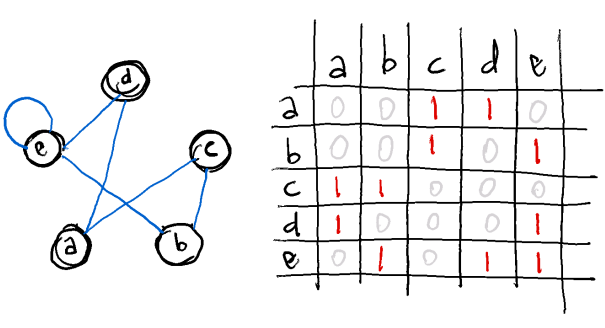
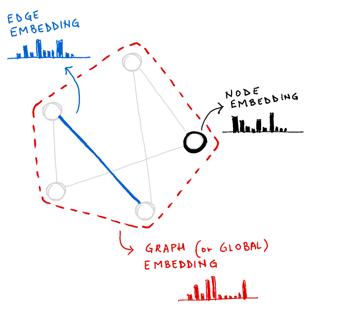

A quick introduction to Graph Neural Networks
Geometric Deep Learning has become increasingly popular over the past few years, and I have recently become more and more interested in them.
In this post, I will try to compress the main intuitions (at a very high level) behind Graph neural networks, so that it will be easier to get to more detailed aspects in the future posts.
Table of contents:
What is a graph?
A graph is a data structure made of nodes (or vertices) connected by edges (or links); we can simply say that edges represent the relationships between nodes.
Depending on the way the edges link the nodes, we can classify graphs as directed (edges direction matters and is specified at each edge) and undirected (edges have no specified direction and can be traversed how we desire).
Connectivity is another way to do network classification: for example, a graph in which all the nodes are connected to all the others is called complete, while a graph without any directed cylces is categorized as directed acyclic.
There are many different graph classifications but the important thing to bear in mind is that a graph can commonly be described by its connectivity information with an adjacency matrix, that simply stores a "1" if two nodes are connected (like node "a" and node "c" in the image below) or a "0" if they are not.

Node, edge and graph level information

Each piece of the graph carries a different information level:
- node, with attributes such as number of neighbours or node class
- edge, with directions and attributes like edge weight or edge class
- graph information, with global attributes like number of nodes or shortest paths
Furthermore, each element can be seen as a place in which we can store information, creating different types of embedding.
This is particularly important in the deep learning domain, since embeddings can be learned and treated similarly to weights to train.
Graphs applications
As stated in the magnificent article A gentle introduction to Graph Neural Networks1 (from which I have taken most of the inspiration for this post), "graphs are all around us", and the followings are just a few examples of what can be represented using them:
- interactions (like social media networks, trade networks or document citation networks. The CORA dataset is a good example of the latter)
- fraud detection systems (here a graph based identity fraud detection is described)
- chemical molecular structures or interactions between proteins (like the PPI dataset)
- recommender systems (here's a review of graph learning based recommender systems)
- manifolds (an application of geometric deep learning on manifold is shown in this short video)
Even images and text can be represented using a graph!
An image is a grap
Comments
Comments powered by Disqus